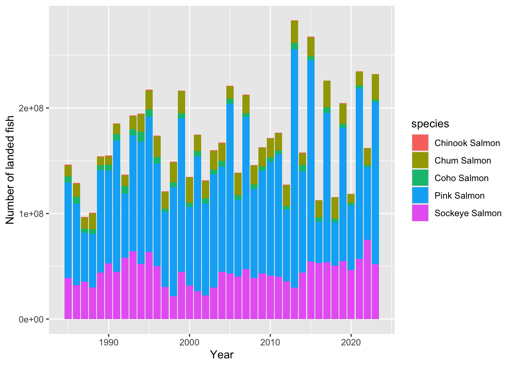
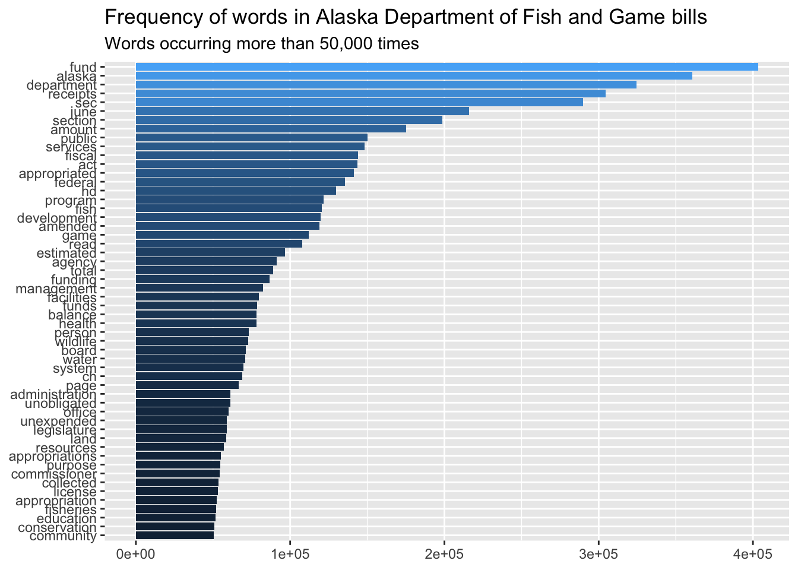
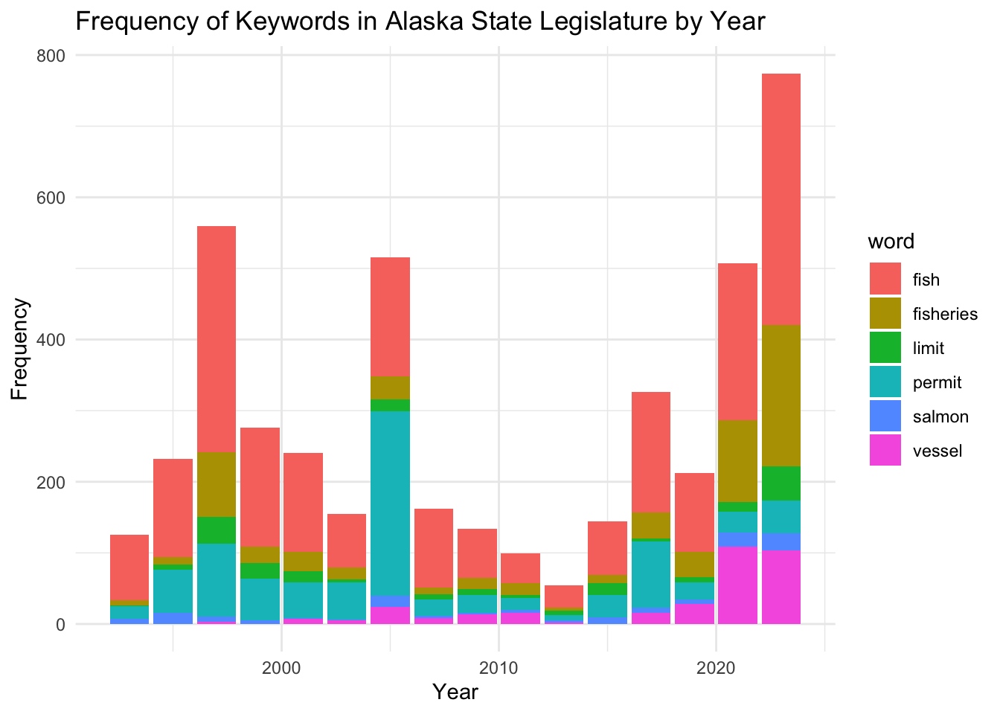
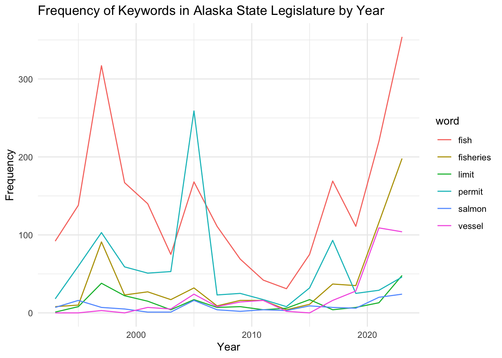

# Load necessary libraries
library(tidyverse)
library(tidytext)
library(textdata)salmon <- read_csv("salmondata/rawsalmon.csv")Rows: 1902 Columns: 9
── Column specification ────────────────────────────────────────────────────────
Delimiter: ","
chr (2): Area, Species Name
dbl (7): Year, Number Of Fish (estimated), Landed Weight (lbs), Whole Weight...
ℹ Use `spec()` to retrieve the full column specification for this data.
ℹ Specify the column types or set `show_col_types = FALSE` to quiet this message.salmon <- salmon %>% rename(species = `Species Name`,
num_fish = `Number Of Fish (estimated)`,
land_weight = `Landed Weight (lbs)`,
whole_weight = `Whole Weight (lbs)`,
num_permit = `Permit Count`,
num_processor = `Processor Count`,
num_vessel = `Vessel Count`)
write.csv(salmon, "salmondata/salmon.csv")ggplot(salmon, aes(x = Year, y = num_fish)) +
geom_col(stat = "identity", aes(fill = species), bins = 30) +
labs(y = "Number of landed fish")Warning in geom_col(stat = "identity", aes(fill = species), bins = 30):
Ignoring unknown parameters: `stat` and `bins`Warning: Removed 284 rows containing missing values or values outside the scale range
(`geom_col()`).
fishes <- data.frame(
legislature = c(18, 19, 20, 21, 22, 23, 24, 25, 26, 27),
fishcount = c(88, 133, 280, 149, 120, 54, 161, 91, 31, 22),
year = c(1993, 1995, 1997, 1999, 2001, 2003, 2005, 2007, 2009, 2011)
)
sockeye <- salmon %>%
filter(species == "Sockeye Salmon")
fishsockeye <- right_join(fishes, sockeye, by = c("year" = "Year"))
view(fishsockeye)fishandgame <- read.csv("fish_and_game.csv")
fishandgame <- fishandgame %>%
mutate(Year = case_when(
Legislature == 33 ~ 2023,
Legislature == 32 ~ 2021,
Legislature == 31 ~ 2019,
Legislature == 30 ~ 2017,
Legislature == 29 ~ 2015,
Legislature == 28 ~ 2013,
Legislature == 27 ~ 2011,
Legislature == 26 ~ 2009,
Legislature == 25 ~ 2007,
Legislature == 24 ~ 2005,
Legislature == 23 ~ 2003,
Legislature == 22 ~ 2001,
Legislature == 21 ~ 1999,
Legislature == 20 ~ 1997,
Legislature == 19 ~ 1995,
Legislature == 18 ~ 1993,
Legislature == 17 ~ 1991,
Legislature == 16 ~ 1989,
Legislature == 15 ~ 1987,
Legislature == 14 ~ 1985,
))fishandgame <- fishandgame %>%
mutate(FULL_TEXT = tolower(FULL_TEXT)) %>%
mutate(FULL_TEXT = gsub("[[:punct:]]", "", FULL_TEXT),
FULL_TEXT = str_replace_all(FULL_TEXT, "\\b\\d+\\b", ""),
FULL_TEXT = str_replace_all(FULL_TEXT, "\\b\\w*\\d+\\w*\\b", ""))
tokenized_fishandgame <- fishandgame %>%
unnest_tokens(word, FULL_TEXT)
data("stop_words")
stopfishandgame <- tokenized_fishandgame %>%
anti_join(stop_words)Joining with `by = join_by(word)`salmontextanalysisdf <- inner_join(stopfishandgame, salmon, by = "Year")Warning in inner_join(stopfishandgame, salmon, by = "Year"): Detected an unexpected many-to-many relationship between `x` and `y`.
ℹ Row 1 of `x` matches multiple rows in `y`.
ℹ Row 1862 of `y` matches multiple rows in `x`.
ℹ If a many-to-many relationship is expected, set `relationship =
"many-to-many"` to silence this warning.threshold <- 50000
salmontextanalysisdf %>%
count(word, sort = TRUE) %>%
filter(n > threshold) %>%
ggplot(aes(y = fct_reorder(word, n), x = n, fill = log(n))) +
geom_col(show.legend = FALSE) +
labs(
title = "Frequency of words in Alaska Department of Fish and Game bills",
subtitle = "Words occurring more than 50,000 times",
y = NULL, x = NULL
)
legis <- read_csv("fish_and_game.csv")Rows: 428 Columns: 4
── Column specification ────────────────────────────────────────────────────────
Delimiter: ","
chr (3): Name, Link, FULL_TEXT
dbl (1): Legislature
ℹ Use `spec()` to retrieve the full column specification for this data.
ℹ Specify the column types or set `show_col_types = FALSE` to quiet this message.leng <- length(legis$Legislature)
getti <- function(word){
word_freq <- c()
for (i in 1:leng){
legis_line <- legis$FULL_TEXT[i] %>%
str_split("(?<=\\.)\\s*") %>% # specify the end-of-line character(s)
pluck(1)
word_freq_i <- legis_line %>%
str_subset(word) %>%
length()
#message(word_freq_i) #only to check it works
word_freq <- append(word_freq, word_freq_i)
}
return(word_freq)
}
legis_word <- legis %>%
mutate(fish = getti("[F/f]ish")) %>%
mutate(fisheries = getti("[F/f]isher[ies/y]")) %>%
mutate(permit = getti("[P/p]ermit")) %>%
mutate(vessel = getti("[V/v]essel")) %>%
mutate(salmon = getti("[S/s]almon")) %>%
mutate(limit = getti("[L/l]imit"))
legis_word_longer <- legis_word %>%
select(-FULL_TEXT) %>%
pivot_longer(c('fish', 'fisheries', 'permit', 'vessel', 'salmon', 'limit'), names_to = "word", values_to = "times_mentioned") %>%
mutate(Year = Legislature) %>%
mutate(Year = case_when(
Legislature == 33 ~ 2023,
Legislature == 32 ~ 2021,
Legislature == 31 ~ 2019,
Legislature == 30 ~ 2017,
Legislature == 29 ~ 2015,
Legislature == 28 ~ 2013,
Legislature == 27 ~ 2011,
Legislature == 26 ~ 2009,
Legislature == 25 ~ 2007,
Legislature == 24 ~ 2005,
Legislature == 23 ~ 2003,
Legislature == 22 ~ 2001,
Legislature == 21 ~ 1999,
Legislature == 20 ~ 1997,
Legislature == 19 ~ 1995,
Legislature == 18 ~ 1993,
Legislature == 17 ~ 1991,
Legislature == 16 ~ 1989,
Legislature == 15 ~ 1987,
Legislature == 14 ~ 1985
))wordplot <- ggplot(data = legis_word_longer, aes(x = Year, y = times_mentioned, fill = word)) +
geom_bar(position='stack', stat='identity') +
theme_minimal() +
labs(
title = "Frequency of Keywords in Alaska State Legislature by Year",
x = "Year",
y = "Frequency"
)
wordplot
yearly_word <- legis_word_longer %>%
group_by(Year, word) %>%
summarise(count = sum(times_mentioned))`summarise()` has grouped output by 'Year'. You can override using the
`.groups` argument.glimpse(yearly_word)Rows: 96
Columns: 3
Groups: Year [16]
$ Year <dbl> 1993, 1993, 1993, 1993, 1993, 1993, 1995, 1995, 1995, 1995, 1995…
$ word <chr> "fish", "fisheries", "limit", "permit", "salmon", "vessel", "fis…
$ count <int> 92, 8, 1, 18, 7, 0, 138, 10, 8, 60, 16, 0, 317, 91, 38, 103, 7, …yearlyplot <- ggplot(data = yearly_word, aes(x = Year, y = count, color = word)) +
geom_line() +
theme_minimal() +
labs(
title = "Frequency of Keywords in Alaska State Legislature by Year",
x = "Year",
y = "Frequency"
)
yearlyplot
ggsave("yearlyplot.png", yearlyplot)Saving 7 x 5 in image